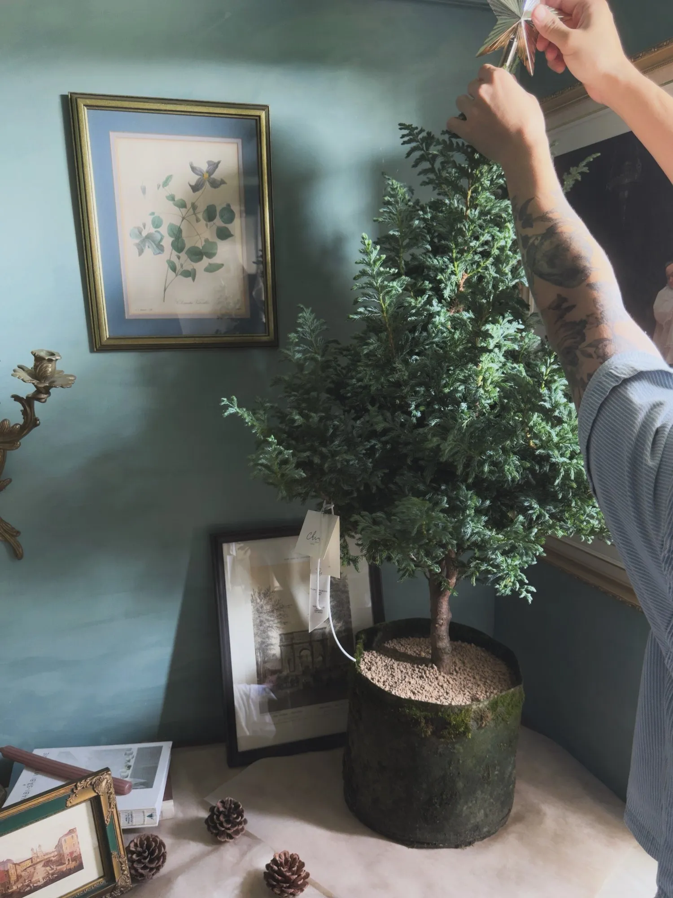
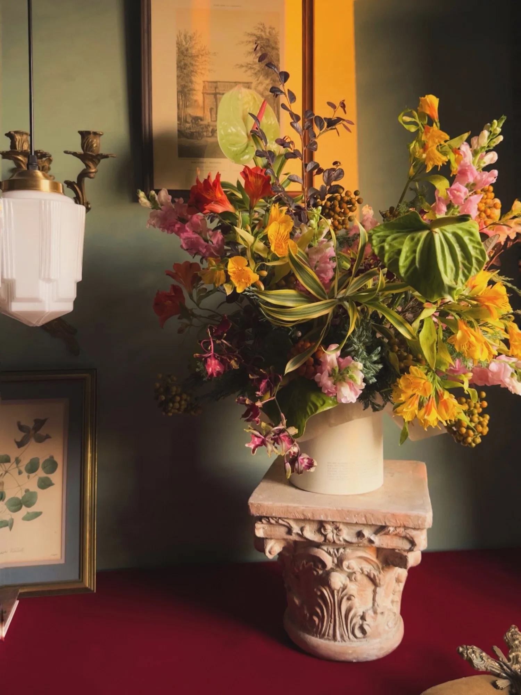
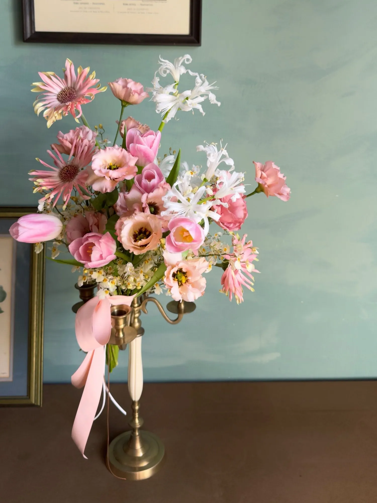
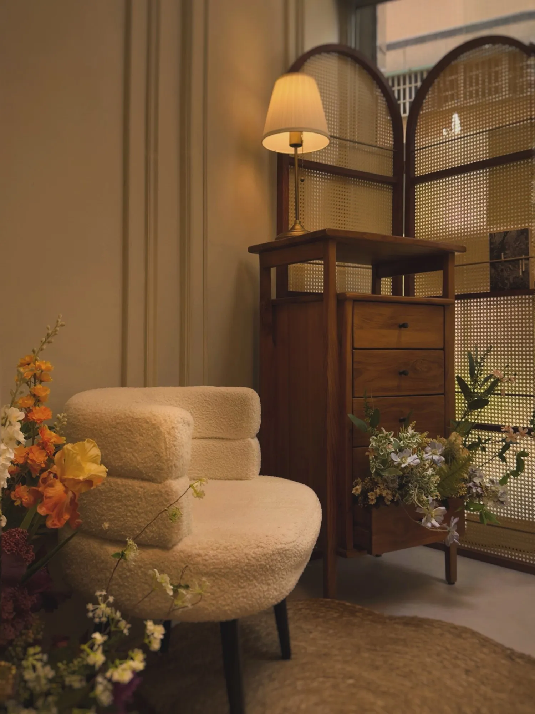
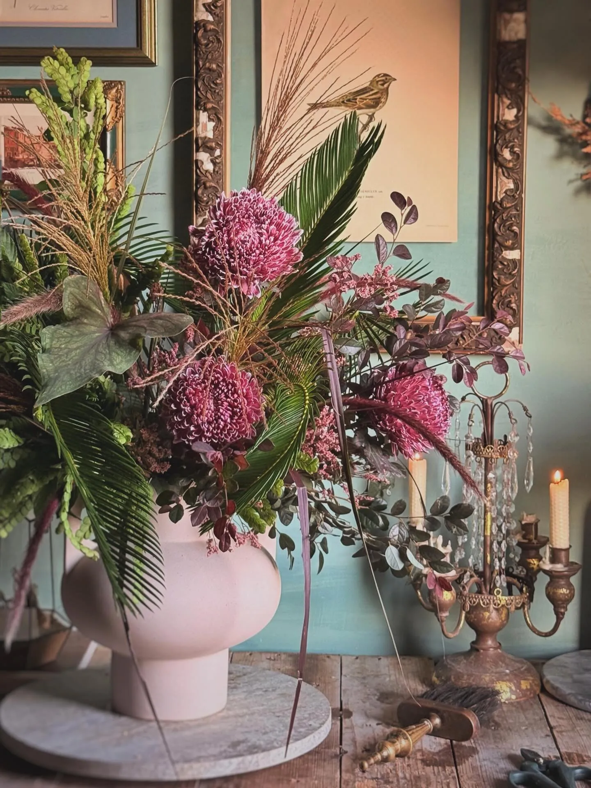
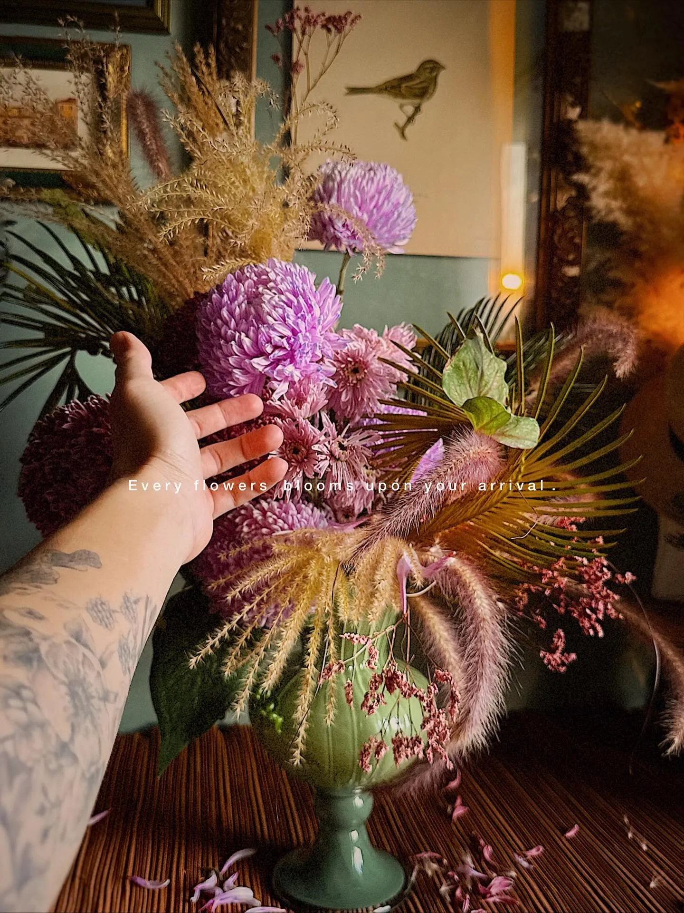
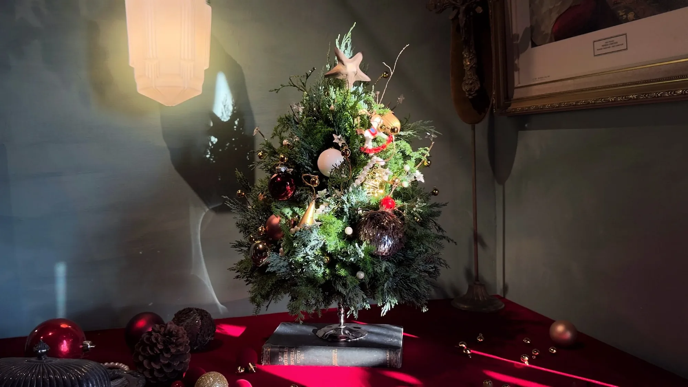

Our Philosophy
把生活過成詩的溫柔方式
CHIU.FLORIST 是一間位於台中的花藝工作室。我們相信，花藝不只是擺飾，而是讓空間呼吸、讓日子有了溫度的語言。
從一份訂製花禮、一場婚禮的視覺佈置，到商業空間的軟裝與週花，我們順著季節挑選花材，刻意保留花朵原本的呼吸感與空氣感，讓每一件作品低調細膩，卻自帶光芒。
認識 CHIUCHIU.FLORIST 是一間位於台中的花藝工作室。我們相信，花藝不只是擺飾，而是讓空間呼吸、讓日子有了溫度的語言。
從一份訂製花禮、一場婚禮的視覺佈置，到商業空間的軟裝與週花，我們順著季節挑選花材，刻意保留花朵原本的呼吸感與空氣感，讓每一件作品低調細膩，卻自帶光芒。
認識 CHIU

從一束花到一整個空間，依照場合、對象與季節量身規劃，讓花與空間自然對話。

生日、紀念日與節慶花禮，依送禮對象與心意量身設計。
了解更多
證婚捧花、婚紗拍攝花束，到整場活動的視覺佈置。
了解更多
櫥窗、店面與展演空間的花藝佈置與擺飾選品。
了解更多
為企業與商業空間定期更換季節花藝，讓空間保有生命力。
了解更多
節慶主題花藝課、花藝饗宴與親子花藝，採預約包班。
了解更多
親自挑選的黃銅花器與家飾，讓花與空間更有溫度。
了解更多當冬夜微光點亮，我們在深綠松柏間，綴上一抹高訂的珠光。這不單是一份花禮，更是獻給冬夜的光影情書，為你靜靜典藏一整季的璀璨與閃耀。
